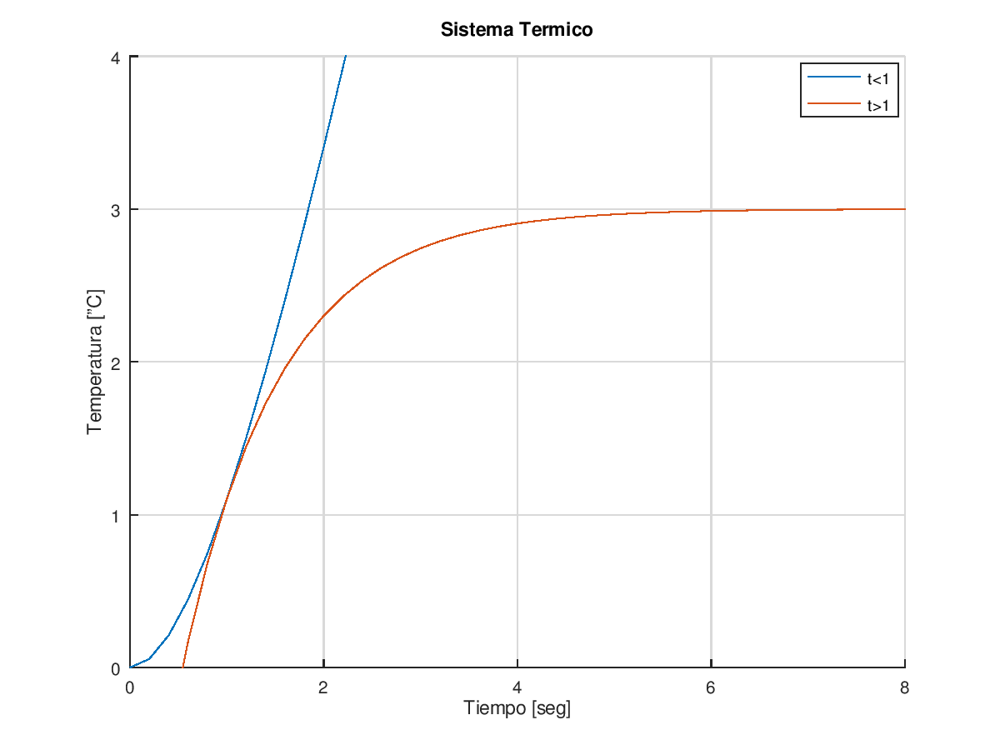

clear; clc;
%Termico dt1=0.2; t1=0:dt1:20; %ecuaciones resultantes yt1=3.*exp(-t1)+3*t1-3; yt2=3.*(1+exp(-t1)-exp(1-t1)); figure(1); hold on ; plot(t1,yt1); plot (t1,yt2); axis([0,8,0,4]); grid; title("Sistema Termico"); xlabel("Tiempo [seg]"); ylabel("Temperatura [ºC]"); legend("t<1","t>1"); %Observacion: las curvas son adyacentes para t=1segundo. %Hidraulico dt2=0.2; t2=0:dt2:30; %ecuacion resultante yh=-(8/5).*exp(-1/4.*t2)+(8/5); figure(2); plot(t2,yh); axis([0,25,0,2]); grid; title("Sistema hidraulico"); xlabel("Tiempo [seg]"); ylabel("Presion [N/m2]"); ##legend(""); %Observacion: se considera estable para t=5tau=20segundos